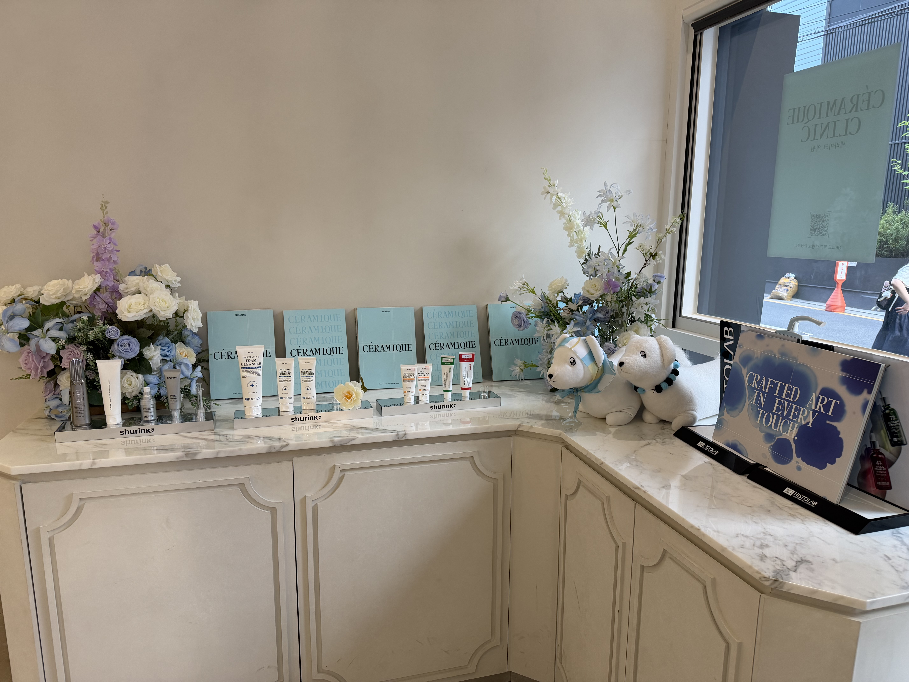
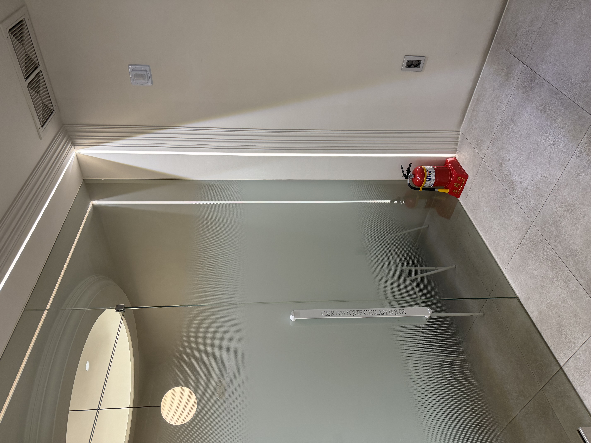
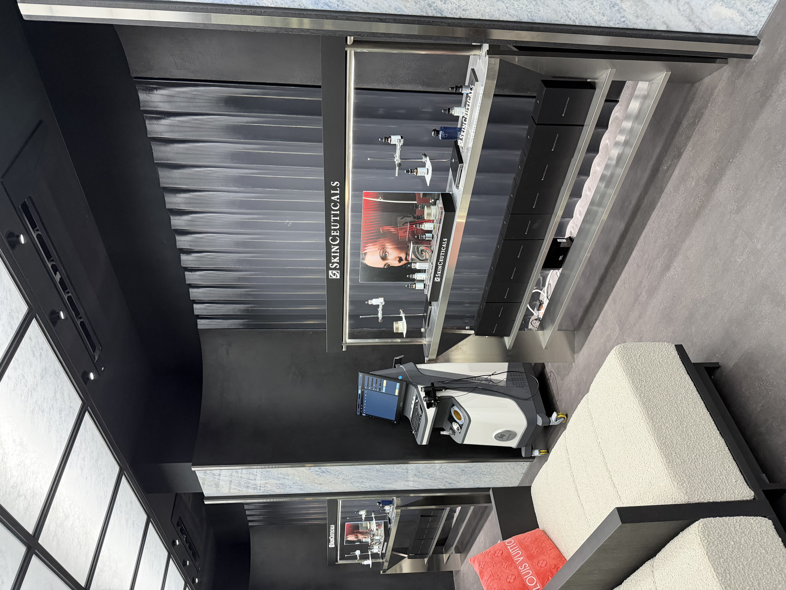
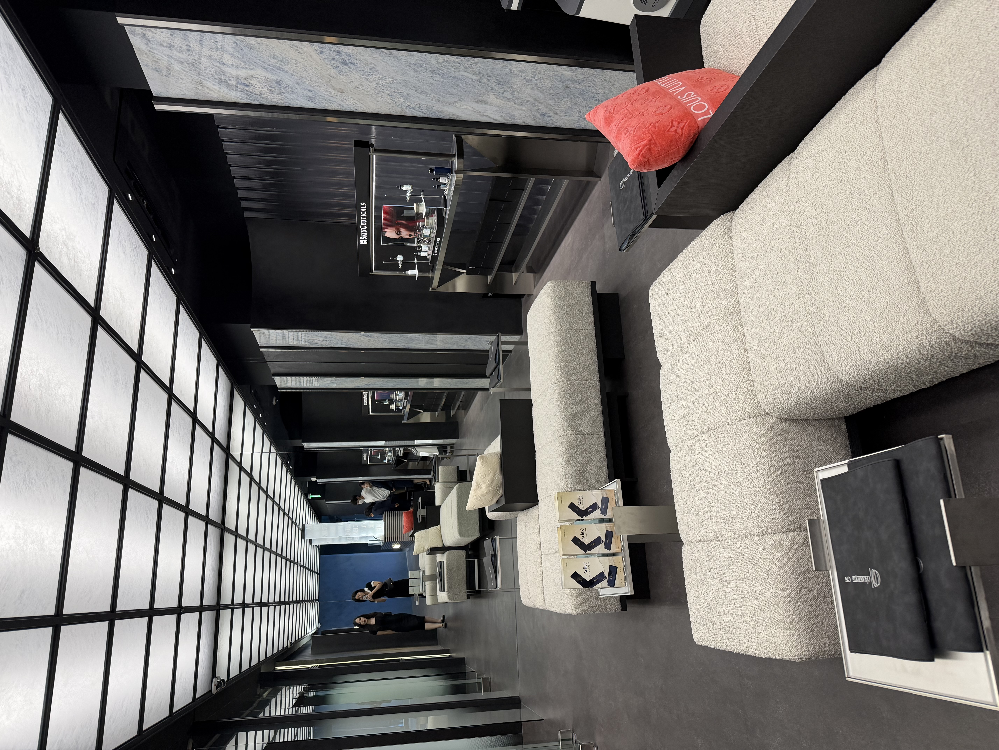

세라미크의원은 연간 6만 건 이상의 레이저 제모 시술을 진행하는 강남 프리미엄 피부과입니다. 와이즐리가 추구하는 저자극·고품질 그루밍 시장에서 가장 확실한 오프라인 파트너가 될 수 있습니다.
레이저 제모는 시술 전 반드시 면도가 필요합니다. 시중 면도기는 피부 자극을 일으킬 수 있어, 제모 후 민감해진 피부에 적합한 면도기 선택이 매우 중요합니다. 와이즐리는 이 문제의 정답입니다.
레이저 제모 후 피부는 일시적으로 민감해집니다. 와이즐리는 피부 자극을 최소화하는 설계로 시술 전·후 모두 안심하고 사용할 수 있습니다.
제모 고객은 10개월 이상 매 시술 전 면도를 반복합니다. 매일 써도 자극 없는 와이즐리는 제모 기간 동안의 데일리 그루밍 루틴에 최적화된 선택입니다.
수염이 굵은 분, 얇은 분, 제모 진행 중 모근이 약해진 분 등 상태에 따라 적합한 날을 고를 수 있습니다. 제모 단계별 피부 상태에 맞는 맞춤 면도가 가능합니다.
세라미크의원 제모 고객의 21%는 여성입니다. 다리, 겨드랑이, 비키니 등 바디 제모 전 면도가 필요한 여성 고객에게 와이즐리 여성용 라인을 자연스럽게 연결할 수 있습니다.
레이저 제모 시술 후 모낭염(folliculitis)이 발생할 수 있습니다. 주요 원인 중 하나가 시술 전 면도 시의 과도한 피부 자극입니다. 레이저로 인해 모낭이 일시적으로 약해진 상태에서 자극이 강한 면도기를 사용하면, 피부 트러블과 모낭염 위험이 높아질 수 있습니다.
세라미크의원은 이러한 이유로 시술 전 저자극 면도기 사용을 적극 권장하고 있습니다. 와이즐리의 부드러운 면도 경험은 민감해진 피부에 가해지는 마찰을 최소화하여, 모낭염 발생 가능성을 낮추는 데 실질적인 도움이 됩니다.
의료진의 신뢰도 있는 추천은 와이즐리의 가장 강력한 마케팅 자산이 됩니다. 광고가 아닌 전문가의 의학적 조언으로 고객에게 전달됩니다.
단순한 제품 전시가 아닙니다. 구매 니즈가 확실한 고객과의 반복적이고 신뢰 기반의 접점입니다.
레이저 제모는 반드시 면도 후 내원해야 합니다. 클리닉 내 전시는 자연스러운 구매 동기로 연결됩니다.
제모는 평균 10~12회를 권장합니다. 같은 고객이 반복 내원하는 동안 와이즐리 브랜드 인지도가 자연스럽게 누적됩니다.
리셉션, 대기실, 복도, 컨설팅 라운지 등 브랜드 노출에 최적화된 고급 공간이 다수 준비되어 있습니다.
연 6만 건 시술을 책임지는 정기 내원 고객층은 뷰티·그루밍에 높은 관심과 구매력을 보유한 타깃입니다.
세라미크의원 EMR 오더 데이터 기준 12개월 전수 분석 결과입니다. 시술 건수 기준이며 동일 고객의 여러 세션이 포함됩니다.
세라미크의원 내 브랜드 노출 및 제품 전시에 활용 가능한 공간입니다. 모든 공간이 고급스럽고 브랜드 이미지를 높이는 환경으로 구성되어 있습니다.




단순한 광고가 아닙니다. 구매 의도가 명확하고, 의료 신뢰도가 더해진 반복 접점입니다.
지난 1년간 세라미크의원의 제모 시술 건수는 62,189건입니다. 레이저 제모 시술 전 면도는 필수이기 때문에, 매 방문마다 면도기를 사용하는 고객이 연간 6만 명 이상 클리닉을 거쳐 갑니다. 이보다 명확한 구매 의도를 가진 오프라인 채널은 없습니다.
세라미크의원 제모 고객의 79%는 남성입니다(46,321건). 남성 고객 대부분은 수염·턱·인중 등 얼굴 제모를 받으며, 시술 전 반드시 면도를 해야 합니다. 20~40대 남성 그루밍 고객을 가장 높은 구매 의향 상태에서 만날 수 있는 접점입니다.
전체 시술의 73%가 얼굴 제모입니다. 레이저 제모 후 모낭염 예방을 위해 저자극 면도기 사용이 권장되는데, 이는 와이즐리의 핵심 제품 가치와 정확히 맞닿아 있습니다. 의료진이 자연스럽게 추천할 수 있는 임상적 맥락을 제공합니다.
제모 시술은 평균 10~12회를 권장합니다. 한 번 등록한 고객은 10개월 이상 꾸준히 내원하므로, 클리닉 내 와이즐리 제품은 동일 고객에게 수십 번 반복 노출됩니다. 단순 인지를 넘어 브랜드 선호와 구독 습관으로 이어질 수 있습니다.
세라미크의원 의료진이 "레이저 제모 전 와이즐리 같은 저자극 면도기를 권장합니다"라고 말하는 순간, 이는 단순한 광고 카피가 아닌 전문가의 의학적 조언이 됩니다. 신뢰도 기반의 구매 전환은 일반 디지털 광고가 만들어낼 수 없는 가치입니다.
단계별로 시작해 성과를 확인하며 확장할 수 있는 구조입니다.